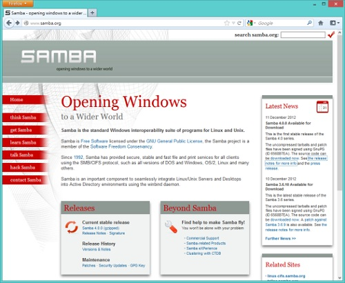

取代 Windows 檔案伺服器的 Samba 4.0 登場

◎本文原載 Linux Pilot，原文章連結按此。
Samba 4.0 的重點功能之一，是可以取代 Windows 成為 Active Directory 網域的伺服器，只是研發多年仍然停留在測試版本。 Samba Team 在 2012 年 12 月 11 日，終於宣布推出正式版本的 Samba 4.0，成為業界一時的話題。

Samba 是在 Linux 或 UNIX 等 OS 上，提供相客於 Windows 檔案伺服器功能和目錄服務功能的開源軟體。早期以相容 Windows NT Server 為目標開發，在 2.0 版本時已經具備與 Windows NT Server 的同等功能，並且可架設 Windows 網域，成為其 Domain Controller。但自 Windows 2000 起，微軟用 Active Directory 取代以往的 Windows 網域，Samba 於是急起直追，至 3.0 時開始可以架設 Active Directory 的成員伺服器，但卻未能架設 Active Directory 的 Domain Controller。Samba 4.0 的出現令企業可以完全以 Samba 取代 Windows 2003/2008 Server 管理 Active Directory。
Samba 開發團隊表示，Active Directory 相容功能得以成功開發，除了有賴微軟公開的技術文件外，亦得到微軟工程師協助進行相容性測試。這次微軟向 Samba 伸出友誼之手，原因是希望令微軟的技術普及。微軟的的 Windows Server 負責人 Thomas Pfenning 表示「Active Directory 是企業 IT 環境的核心技術，微軟有令不同平台的 Active Directory 產品相容的義務。」Samba 4.0 的新亮點包括支援 SMB 2.1 協定、存放管理資訊的 Trivial Database (TDB) 支援群集、以及新加入的模組化功能，目的是讓 OEM 廠商無需改動 Samba 的核心程式碼，也能為 Samba 加入延伸的功能。